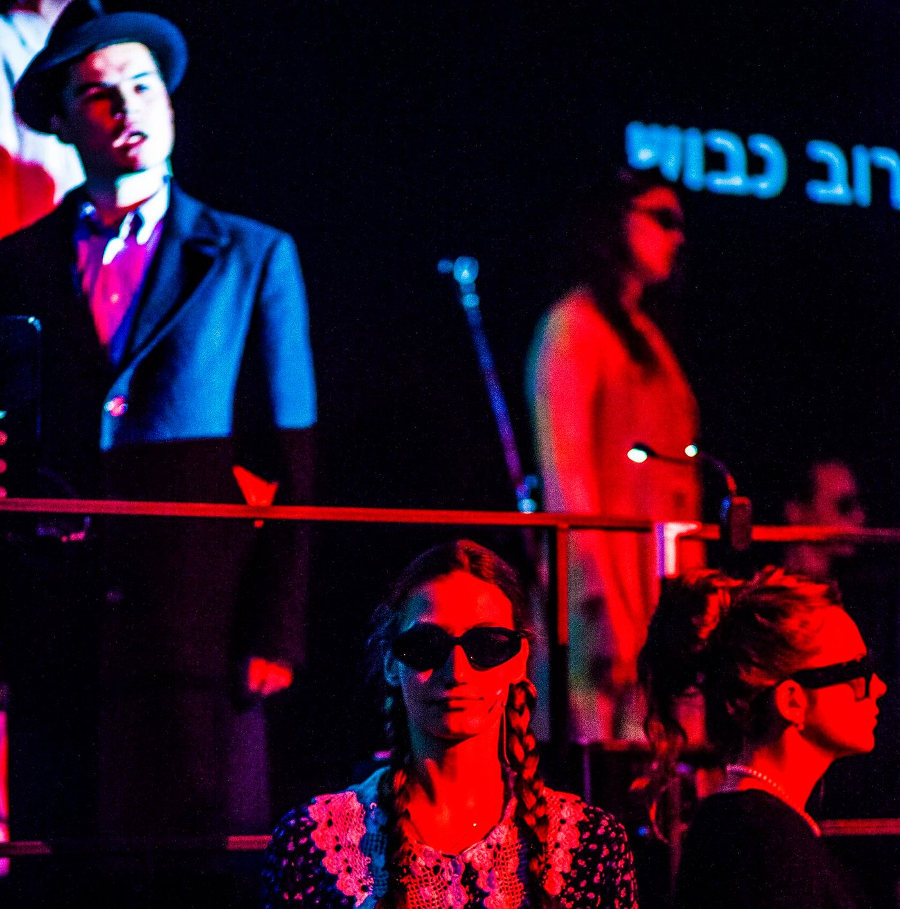

Logline & Concept
A music–drama cabaret based on songs preserved by witnesses of the Shoah (Holocaust). These authentic songs, drawn from the Fortunoff Archive at Yale University, are staged not as relics of the past but as living testimonies. Young performers reinterpret them, turning voices from ghettos and camps into an anthem for a generation confronting its own wars and anxieties.
Creative Team
- Director: Daria Shamina
- Video Art & Projection Design: Nick Dreyden
- Produced by: Fulcro Theatre with the support of Gesher Theatre (performed at the Gesher Hangar)
Premiere
March 2023, Gesher Theatre, Tel Aviv; additional performances July 2023.
Visual & Multimedia Concept
The multimedia design by Nick Dreyden was not a backdrop but the emotional engine of the performance. His projection work gave the cabaret its unsettling, poetic atmosphere. During songs, texts in six languages (Russian, Ukrainian, Yiddish, Polish, German, Hebrew) appeared on the screens like epitaphs, testimonies, or fragments of collective memory. Archival photographs and wartime footage fused with the silhouettes of the performers, so that their bodies literally carried the burden of memory. At other moments, the images fractured into abstract bursts of light and shadow, suggesting memory breaking apart, trauma resurfacing. Subtitles and projections also served as a living translation, making the songs accessible to everyone while reminding the audience that language itself is fragile in the face of horror. The result was a layered visual world where video and song were inseparable: the projections made the past present, insisting that memory is not static but active, pulsing and disturbing. Critics noted that without this video language, the production would not have reached the same depth.
Reception
Reviewers and audiences alike emphasized the impact of the video design. La'Liblog observed: "These songs gain a modern sound and, through the projections, become an anthem for today's youth discovering what war means." Many spectators left the theatre in tears, noting that the images gave the songs an unbearable immediacy: "You did not just hear the voices — you saw them, projected into our time." Critics underlined that Nick Dreyden's video art was the bridge between archive and stage, between history and the present, creating what one review called "a tense, poetic space that forces you not to sleep, but to remember."
Gallery


